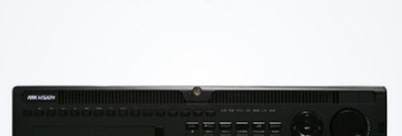

كل المنتجات ← كاميرات وأجهزة هيكفيجن
الموديل: DS-9664NI-M8

| الماركة | هيكفيجن |
|---|---|
| الموديل | DS-9664NI-M8 |
| نوع المنتج | جهاز تسجيل NVR |
| الفيديو والصوت | |
| مدخلات فيديو IP | 64-ch |
| النطاق الوارد | 400 Mbps |
| النطاق الصادر | 400 Mbps |
| HDMI 1 Output | 8K (7680 × 4320)/30 Hz, 4K (3840 × 2160)/60 Hz, 4K (3840 × 2160)/30 Hz, 2K (2560 × 1440)/60 Hz, 1920 × 1080/60 Hz |
| HDMI 2 Output | 4K (3840 × 2160)/60 Hz, 4K (3840 × 2160)/30 Hz, 2K (2560 × 1440)/60 Hz, 1920 × 1080/60 Hz *: When HDMI 1 output resolution is 8K, the maximum HDMI 2 output resolution is 1080p. |
| VGA 1 Output | 1920 × 1080/60 Hz |
| VGA 2 Output | 1920 × 1080/60 Hz |
| وضع إخراج الفيديو | HDMI 1 and VGA 1 provide simultaneous video output, and work as the main output; HDMI 2 and VGA 2 provide simultaneous video output, and work as the auxiliary output |
| مخرج CVBS | 1-ch, BNC (1.0 Vp-p, 75 Ω), resolution: PAL: 704 × 576, NTSC: 704 × 480 |
| مخرج الصوت | 2-ch, RCA (Linear, 1 KΩ) |
| صوت ثنائي الاتجاه | 1-ch, RCA (2.0 Vp-p, 1 KΩ, using the audio input) |
| فك الترميز | |
| Decoding Format | H.265+/H.265/H.264+/H.264 |
| Recording Resolution | 32 MP/24 MP/12 MP/8 MP/6 MP/5 MP/4 MP/3 MP/1080p/UXGA/720p/VGA /4CIF/DCIF/ 2CIF/CIF/QCIF *: The NVR supports up to 8-ch 32/24/16 MP IP video inputs, all channels for less than 16 MP. |
| Synchronous playback | 16-ch |
| Decoding Capability | 2-ch@32 MP (30 fps); 3-ch@24 MP (30 fps); 5-ch@16MP (30 fps); 6-ch@12MP (30 fps);10-ch@8 MP (30 fps); 13-ch@6 MP (30 fps);16-ch@5 MP (30 fps);40-ch@2 MP(30 fps) |
| Audio Compression | G.711ulaw/G.711alaw/G.722/G.726/AAC/MP2L2/PCM |
| الشبكة | |
| Network Protocol | TCP/IP, DHCP, IPv4, IPv6, DNS, DDNS, NTP, RTSP, SADP, SMTP, SNMP, NFS, iSCSI, ISUP, UPnP™, HTTP, HTTPS, ONVIF(Version 2.2), OTAP |
| Network Interface | 2, RJ-45 10/100/1000 Mbps self-adaptive Ethernet interface |
| Camera Access Protocol | ONVIF(Version 2.5), RTSP |
| RAID | |
| RAID Type | RAID0, RAID1, RAID5, RAID6, RAID10 |
| الواجهات المساعدة | |
| Serial Interface | 1 RS-485 (full-duplex), 1 RS-232 |
| SATA | 8 SATA interfaces supporting hot-plug |
| eSATA | 1 eSATA interface |
| Capacity | Up to 20 TB capacity for each disk |
| Alarm In/Out | 16/9 |
| USB Interface | Front panel: 2 × USB 2.0; Rear panel: 2 × USB 3.0 |
| Ctrl 12V | Controllable 12 VDC, 1 A power output for external alarm device; The power will be turned on when the alarm output is triggered. *: The Ctrl 12V power is controlled by alarm output 9. |
| DC 12V | 12 VDC, 1 A power output |
| عام | |
| مصدر الطاقة | 100 to 240 VAC, 50 to 60 Hz |
| Consumption | ≤ 50 W (without HDD) |
| حرارة العمل | -10 °C to 55 °C (14 °F to 131 °F) |
| Working Humidity | 10% to 90% |
| Chassis | 2U chassis |
| Dimension (W × D × H) | 442 × 462 × 88 mm ( 17.4"× 18.2" × 3.5") |
| Certification | |
| Obtained Certification | CE, FCC |
| CE | EN 55032:2015, EN 61000-3-2, EN 61000-3-3, EN 50130-4 |
| Cyber Security | |
| EN 303645 | Support |
| Secure Boot | Support |
| Secure Component Verification SVC | Support |
| Password Protection | Support |
| IP & MAC Address Filtering | Support |
| HTTPS Encryption | Support |
| Live View & Playback Stream Encryption | Support : AES128 |
| IEEE802.1X(EAP-TLS) Network Access Control | Support |
| Signed Firmware | Support |
| Others | Digest authentication: Support User access log : Support Centralized certificate management : Support Brute force delay protection : Support |